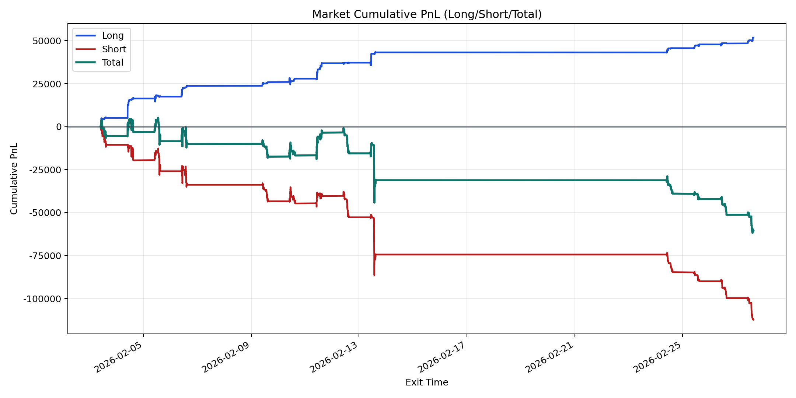
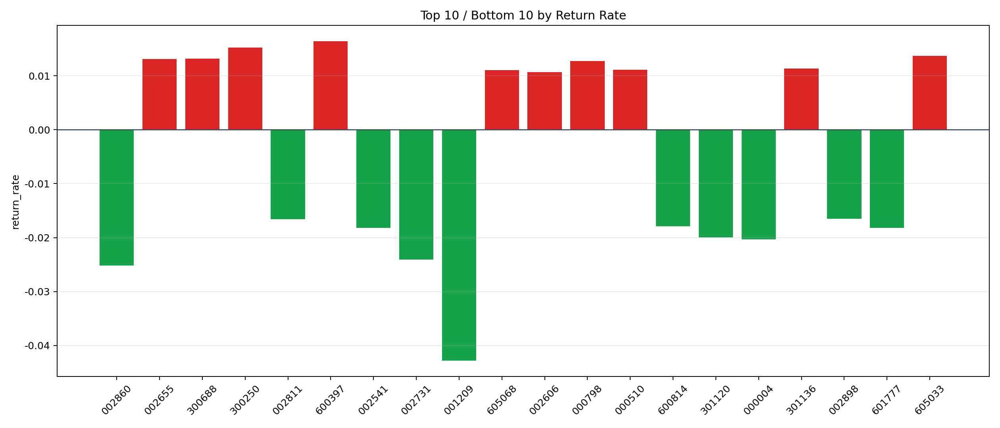

| repo_root | /home/haoranyou/data/output/alpha0.4_1w_5s_3ticks |
|---|---|
| period_months | 1 |
| period_label | 2026-02-03_to_2026-02-27 |
| start_time | 2026-02-03 09:50:37 |
| end_time | 2026-02-27 15:00:00 |
| n_trades | 15597 |
| n_symbols | 929 |
| total_pnl | -60551.323300000106 |
| long_total_pnl | 51763.31680000004 |
| short_total_pnl | -112314.64010000015 |
| total_entry_notional | 147239804.0 |
| long_entry_notional | 25976873.0 |
| short_entry_notional | 121262931.0 |
| total_return_rate | -0.000411242895297525 |
| long_return_rate | 0.00199266927932396 |
| short_return_rate | -0.0009262075324568903 |
| top_symbols_by_return | ["600397", "300250", "605033", "300688", "002655", "000798", "301136", "000510", "605068", "002606"] |
| bottom_symbols_by_return | ["001209", "002860", "002731", "000004", "301120", "601777", "002541", "600814", "002811", "002898"] |

